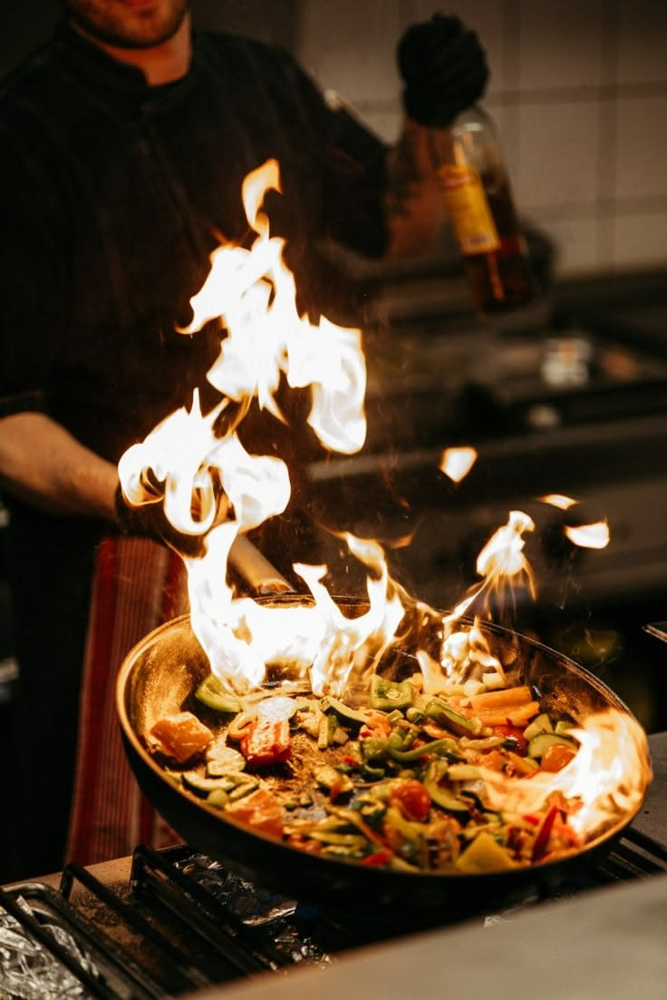

Una cucina che nasce dalla famiglia
Appetito nasce dal desiderio di condividere la buona tavola di casa con chiunque varchi la nostra porta.

Ricette di famiglia, tavola dopo tavola
Tutto è iniziato in una piccola cucina di casa, tra pentole tramandate e ricette scritte a mano. Oggi Appetito porta quello stesso spirito in ogni piatto che serviamo: ingredienti veri, tempi giusti e la voglia di far sentire ogni ospite come a casa propria.
Lavoriamo ogni giorno con piccoli produttori locali per garantire materie prime fresche e di stagione, perché la qualità comincia sempre dalla scelta di cosa portiamo in tavola.
Cosa ci guida ogni giorno
Ingredienti freschi
Selezioniamo materie prime di stagione da produttori locali, per un sapore autentico in ogni piatto.
Cura e accoglienza
Ogni ospite è un invitato a casa nostra: attenzione al dettaglio e calore in ogni servizio.
Tradizione
Ricette tramandate che rispettiamo e reinterpretiamo con tecnica, senza mai stravolgerne l'anima.
Le tappe di Appetito
La prima apertura
Appetito apre le porte come piccola trattoria di quartiere, con una manciata di tavoli e tanta voglia di fare.
Il nuovo menù stagionale
Introduciamo un menù che cambia con le stagioni, in collaborazione con produttori locali selezionati.
Nasce il servizio catering
Portiamo la nostra cucina fuori dalla trattoria, per matrimoni, eventi aziendali e feste private.
Sempre con la stessa passione
Continuiamo a crescere restando fedeli ai valori che ci hanno fatto partire: qualità, cura e condivisione.
Le persone di Appetito
Nome Cognome
Executive ChefNome Cognome
Sous ChefNome Cognome
Maître di SalaNome Cognome
Pastry ChefVieni a trovarci
Siamo nel cuore della città, a due passi dalle principali fermate dei mezzi pubblici e con parcheggio pubblico nelle vicinanze.
- Via Roma 12, 00100 Città
- Tutti i giorni, 12:00–15:00 e 19:00–23:00
Vieni a scoprirci di persona
Il modo migliore per conoscere la nostra storia è sedersi al tavolo. Prenota il tuo posto da Appetito.
Prenota un tavolo